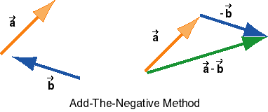

and
and  is that
is that

The second property of the difference of two vectors and
is that
- = +
(-).
This equation suggests the second method for constructing the
difference, here called the Add-The-Negative
method. First the direction of is reversed to give -. Then - is added
to to give - . The diagram
on the left shows the original two vectors, and the diagram on
the right the vector - and how
it is added to .
The diagram below shows the construction of the difference via the comparison method once more. As you can see, the two constructions are not the same, but lead to the same result.

Comparison Method